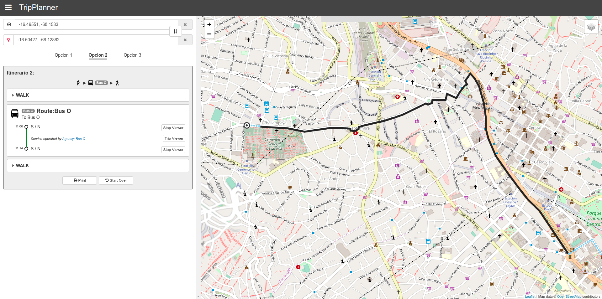
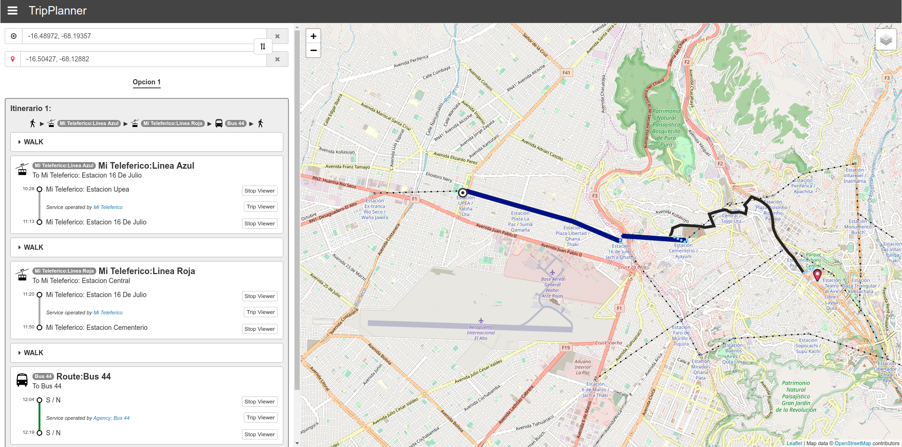

Trip Planner utilizando el estándar GTFS para sistemas de transporte informal
Por Anthony Flores Gomez
INFORMÁTICA FCPN UMSA
La Paz Junio 2020
1. Introducción
1.1 Transporte publico: formal vs. informal
Agencias de transporte en ciudades de todo el mundo proveen la
información relacionada con las paradas, rutas, horarios y otros aspectos de sus sistemas de
transporte mediante publicaciones físicas, digitales o aplicaciones informáticas disponibles para
el público.
Pero en ciudades en desarrollo como La Paz y en el 60% de los asentamientos
urbanos del mundo, esta información es limitada, incompleta o
simplemente no está disponible.
Esto generalmente se debe a que estas ciudades implementan algun tipo de sistema de transporte informal.
Hablando de sistemas de transporte, es posible
clasificar estos en 2 grupos: formales e informales. Mientras que un sistema de transporte
formal se caracteriza por contar con rutas, paradas y horarios establecidos, un sistema de transporte informal
se caracteriza por la carencia de todas o algunas de las caracteristicas formales.
1.2 Problema central
¿Cómo utilizar el estándar GTFS para mejorar el acceso a la información de transporte público en ciudades con sistemas de transporte informal?
La investigacion considera como caso de estudio el sistema de transporte publico informa de la ciudad de La Paz,
La prinicipal diferencia de este sistema, con un sistema formal es la falta de paradas definidas para cada ruta.
1.3 Objetivo general
Adaptar el estándar GTFS en sistemas de transporte informal, para generar datos que puedan ser utilizados en una herramienta trip planner.
- Describir la información de un sistema de transporte informal utilizando el estándar GTFS.
- Proporcionar acceso a esta información mediante una herramienta trip planner.
- Evaluar el funcionamiento de la herramienta trip planner mediante pruebas o casos de uso.
1.4 Hipótesis
El uso del estándar GTFS en el sistema de transporte informal de la ciudad de La Paz permitirá la implementación de una aplicación trip planner, para generar las posibles rutas de transporte público entre dos puntos geográficos dados.
Para la comprobacion de la hipótesis se seguira una investigación con enfoque cualitativo.
La investigacion
recopilara la informacion de un sistema de transporte informal y adaptando esta informacion al formato de la especificaion GTFS se podria generar un feed o dataset GTFS.
Pero como verificar que este dataset representa correctamente la informacion del sistema de transporte informal?
Para verificar esto se despliega una aplicacion trip planner. Si el feed GTFS generado es valido, entonces la aplicacion trip planner podra generar la informacion de rutas del sistema de transporte informal.
De esta forma verificariamos que es posible utilizar el estandar GTFS en un sistema de transporte informal.
2. Marco Teórico
2.1 Estándar GTFS
GTFS acronimo de (General transit feed specification).
Que desde su publicación en el año 2006 se ha convertido en el estándar de facto para representar la información de sistemas de tránsito.
Un paquete, dataset o feed de datos GTFS se compone por seis archivos requeridos y otros archivos opcionales que conforman una base de datos relacional que describe la informacion del sistema de transporte.
Debido a la amplia adopcion que ha tenido, muchas aplicaciones informaticas de transporte público se han desarrollado utilizando informacion en formato GTFS.
2.1 Estándar GTFS
Su principal ventaja es que es posible encontrar y descargar
cientos de feeds GTFS de sistemas de transporte de ciudades alrededor del mundo.
Y la principal desventaja es que GTFS esta diseñado para representar la informacion de
sistemas de tránsito formales. No considera sistemas de tránsito informales.
Esta informacion en formato GTFS por si sola no es util para el usuario regular de transporte
Require de una aplicacion o sistema que tome esta informacion en formato GTFS y la transforme en informacion relevante o util para el usuario (como mapas o graficos).
2.2 Trip Planner
Es un motor de búsqueda para encontrar una ruta entre dos o más ubicaciones determinadas, a veces utilizando más de un modo de transporte (multimodal).
Funcionan (la gran mayoria) utilizando datos en formato GTFS.
Generalmente compuesto por un componente
Backend: que Calcula los posibles viajes/rutas entre 2 puntos. (API)
y un Frontend: que son Interfaces (como web o mobile) que interactuan con el usuario final,
2.3 Metodología de desarrollo FDD
FDD (Feature driven development) es una metodología de desarrollo ágil, iterativa e incremental
que se centra principalmente en las fases de diseño y construcción del prototipo de software. Se compone por 5 subprocesos...
6 hitos para seguir el proceso de cada feat.: Revisión del dominio(1%), diseño(40%), inspeccion de diseño(3%), codigo(45%), inspeccion de codigo(10%), integracion del feat(1%).
3. Marco Aplicativo
3.1 Definición de features
Feature
1
Representación de rutas de transporte informal
2
Adición/Edición de rutas de transporte informal
3
Almacenamiento de rutas de transporte informal
4
Generación del feed GTFS
5
Trip planner
Siguiendo la metodologia FDD se defininen los sgts features relevantes para alcanzar el objetivo propuesto.
1. Se debe definir un modelo para representar una ruta de transporte informal
3.2 Diseño de features
3.2.1 Representación de rutas de transporte informal
Una ruta de transporte informal tiene muchas posibles paradas. Registrando solo una cantidad de estas.
Si observamos una ruta de transporte publico informal en la ciudad de la paz, podemos describirla como una sucecion continua de puntos,
donde cada punto representa un posible parada. Para lograr una representacion aproximada de estas rutas, podemos tomar solo algunos de unos
puntos, la cantidad de puntos registrados depende del criterio de quien este mapeando la ruta de transporte, la presente investigacion registra
al menos un punto entre cada interseccion de una ruta de transporte.
3.2.2 Adición/Edición de rutas de transporte informal
El proceso de adicion y edicion de una de estas rutas se puede modelar como la interaccion entre un usuario (que mapea la ruta) y un editor de rutas.
Donde un usario podria "dibujar" (si vale el termino) la ruta de transporte mediante una sucecion de puntos.
3.2.3 Almacenamiento de rutas de transporte informal
El almacenamiento modela la interaccion entre el usuario mapeador, el editor de rutas, un proceso de validacion y el almacenamiento o repositorio de rutas.
El proceso de almacenamiento debe incluir un paso de validacion de que las rutas sigan el formato definido (que sean una sucecion de puntos).
3.2.4 Generación del feed GTFS
La generacion del feed GTFS se modela como la interaccion entre un usuario, el repositorio de rutas y una herramienta que tome las rutas de transporte informal
y las transforme en un feed GTFS valido.
3.2.5 Trip Planner (backend)
Para el diseño del despliegue de la aplicacion trip planner se utilizara el motor opensource OTP, que toma como entradas un archivo osm (con informacion geografica de la ciudad de la paz)
y feeds GTFS. La presente investigacion recopila 3 feeds GTFS, 2 para los sistemas de transporte formal (lpz bus y teleferico) y ultimo para el sistema de transporte informal.
OTP es una aplicacion de consola, por eso se necesita de un cliente externo que facilite la interaccion con un usario final. Se desarollara un prototipo de cliente web que utilizara un mapa
para representar los resultados graficamente.
3.3 Construcción de features
3.3.1 Representación de rutas de transporte informal
Para la representacion de las rutas se utilizan archivos geojson ya que estos pueden representar la ruta de transporte como una sucecion o array de coordenadas geograficas.
3.3.2 Adición/Edición de rutas de transporte informal
La principal ventaja de los archivos geojson es que es posible crearlos utilizando editores graficos como geojson.io.
3.3.3 Almacenamiento de rutas de transporte informal
Para el almacenamiento de las rutas se utiliza un repositorio en github y el modelo de colaboracion de github flow para automatizar el proceso de adicion o edicion de archivos de rutas de transporte.
La ventaja mas importante de este repositorio es que es posible configurar un servicio de validacion de los archivos en el repositorio, asi verificamos que cada adicion o edicion de rutas siga el formato geojson requerido.
3.3.4 Generación del feed GTFS
Para transformar los archivos geojson de rutas de transporete informal, se desarollo una aplicacion de consola en javascript y distribuida como un paquete npm.
Podemos ver que la aplicacion toma una carpeta con los archivos geojson y genera un feed GTFS con estos.
3.3.5 Trip Planner (web client)
Como se menciono antes OTP necesita de un cliente externo para interactuar graficamente con la informacion de transporte. Para esto se desarrollo un prototipo web basado
en mapas que muestra graficamente la informacion del transporte.
4. Pruebas y resultados
4.1 Rutas de transporte informal-formal
Para las pruebas se mapearon 26 rutas de transporte informal de la ciudad de La Paz con un promedio 192 paradas/stops por cada ruta.
Ademas de 14 rutas correspondientes al transporte publico formal (lpz bus y telefericos).
4.2 Almacenamiento/Validacion de rutas de transporte informal
En la imagen se observa el resultado de un intento fallido de agregacion de una ruta de transporte informal.
4.3 Generación del feed GTFS
El feed GTFS gerado fue validado utilizando la herramienta online gtfsValidator de omnimodal.io.
Sin embargo esta validacion solo verifica que el feed GTFS cumpla los requerimientos de la especificacion GTFS ( es decir el formato de cada archivo, los nombres, los nombres de tablas y columnas).
No valida si el feed GTFS representa la informacion del sistema de transporte.
4.4 Trip Planner (transporte formal)
Finalmente para verificar que el feed GTFS generado con datos del sistema de transporte informal de lpz, representa correctamente la informacion de este sistema.
Se desplego la aplicacion OTP con el feed del transporte informal generado y con 2 mas feeds GTFS correspondientes a lpz bus y el teleferico.
Y utilizando el cliente web se pudo generar informacion de rutas de transporte utilizando los sistemas de transporte formal e informal de la ciudad de lpz.
Algunos de los casos de uso generados mas sobresalientes son:
La interaccion entre el teleferico y el lpz bus, mediante una ruta desde la ciudad de el alto hasta la avenida arce de la ciudad de la paz.
4.4 Trip Planner (transporte informal)

Una ruta de transporte informal que va desde el cementerio hasta la plaza isabel la catolica
4.4 Trip Planner (transporte informal)
Una ruta de transporte informal que va desde una villa de la cruz hasta el monoblock de la umsa
4.4 Trip Planner (transporte formal-informal)

Finalmente la interaccion entre el sitema de transporte por cable y una ruta de transporte informal.
5. Conclusiones
Archivos geojson para representar las rutas de transporte informal.
GTFS con datos de un sistema de transporte informal.
OpenTripPlanner generando informacion de rutas en un sistema de transporte informal.
Se concluye que:
- Es posible representar la informacion de rutas de transporte publico informal utilizando archivos geojson y generar un feed GTFS a partir de estos archivos
6. Recomendaciones
Ampliar la cobertura de rutas de transporte del caso de estudio
Adoptar el estandar GTFS para la representacion de la informacion
GTFS-flex
- Para incrementar la cantidad de resultados generados por la aplicacion trip planner se recomienda mapear mas rutas de transporte informal.
- Se recomienda estudiar la adopcion del estandar GTFS en sistemas de transporte similiares al de la ciudad de lpz, tomando como referencia los resultados obtenidos por la investigacion.
- La especificacion derivada GTFS-flex tiene el objetivo dar soporte a las multiples variaciones de sistemas de transporte informal que existen en el mundo.
Aunque aun esta en fase de pruebas, seria interezante empezar a estudiar su implementacion en nuestro sistema de transporte.